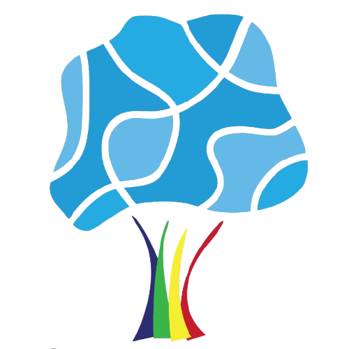

As virtual reality becomes evermore prominent in the modern day, I aimed to investigate its exciting limits and prove just what is and may be possible as VR continues to grow. Incorporating mathematics into the project, one of my goals was to create an apparent four-dimensional Klein Bottle in virtual reality, using Unity 3D, Steam VR and the HTC Vive to make this possible.
Initially the main objective for the project was to model and create a Klein Bottle, where it could be visualised in virtual reality. I had hoped that it would be possible to use a method of movement to walk over the surface. The surface would be modelled using an external program outside of Unity, called Blender and then reimported. One of the main appeals of VR is the movement around seemingly large spaces, and so I would also aim to implement different modes of movement, such as touch-pad walking and controller teleportation over the three-dimensional representation of the 4D object.
A Klein Bottle is defined as a non-orientable surface that is closed, this means it technically has no inside or outside. An idea is that walking on a Klein Bottle means that you will always travel the length of it and never encounter a boundary. It was first theorised by Felix Klein in 1882, whereby two Mobius strips could be glued together. A Mobius strip is a surface with only one edge and one continuous length, like a Klein Bottle this surface is non-orientable but some versions of this band can be modelled in Euclidean space.
Although a 4D version could not be created as Unity did not support morphing of the object over time, the project concluded with a presentation to staff and students at the University of Exeter. The finished product included seamless teleportation mechanics and a 3D Klein Bottle.
Space debris is an ever-increasing issue which poses a huge threat towards space exploration in the future. With space venturing becoming more routine, if something is not done this problem will only intensify. In this project, I began to explore the possible damage caused as a result of the debris; moving onto a few methods that reduce the quantity of debris and protect spacecrafts in orbit from these detrimental effects. The main research in this project is aimed towards modelling the motion of a spacecraft in relation to debris in an orbit above the Earth with the ultimate goal to optimise the distance between the two orbital objects and clean the debris by dragging it further towards the atmosphere. As a matter of fact, I simulated this given a few initial conditions, allowing us to numerically solve the system using the Runge-Kutta 4th order method. Finally, after minimising the distance, we expand on the interactions at a molecular level, occurring between the debris and the atmosphere as it falls back down to Earth.
Within a geosynchronous orbit around the Earth, it is estimated that hundreds of millions of
debris pieces already exist. Naturally we can categorise debris according to size, however from
Earth it’s nearly impossible to track debris of only a few inches wide. Man-made debris can arise
from almost anything on a spacecraft, this can include launch canisters or even flakes of dust
and paint from the body; whilst natural debris occurs in our orbit due to meteors and asteroids. Space debris has caused much concern recently due to the amount of damage it can inflict,
which we shall now explore in more detail.
The main issue with space debris is the damage caused to active spacecrafts, particularly to the
manned crafts as this poses a direct threat to human life. Even relatively small debris, which cannot be remotely tracked, can pierce the shell of a spacecraft; often destroying the craft,
which in turn becomes debris itself. If something is not done to prevent the creation of debris,
its quantity will increase exponentially, this is known as Kessler Syndrome.
On the other hand, many pieces of debris are within a geosynchronous orbit (this type of orbit
is defined to have the same orbital period as the celestial object) and may fall back into the
Earth’s atmosphere, despite much of the debris burning up as it enters the atmosphere. This
might present a huge impact should the quantity of debris continue to increase and if one of the
many fragments should strike land.
Lightning and thunder clouds form an integral part of the climate in many areas across the world, becoming more prevalent due to an increasing rate in global warming. They produce numerous detrimental effects to civilisation, particularly in poorer regions without the capabilities to provide necessary protection to inhabitants. In this essay I aimed to model the behaviour of lightning using computer simulations, numerical analysis and mathematical formulae; with the ultimate goal to prevent and mitigate effects of such lightning strikes. I use various packages included in Python 3.7 to model a system, which I can use to investigate how a lightning channel permeates through a medium of air, as well as the interaction of lightning with positively charged objects.
Lightning is a natural phenomenon that can occur almost anywhere in the world. It is an
electrostatic discharge which is caused by a potential difference between a cloud and another
surface. In this report we will aim to model and study the effects of a particular type of lightning,
known as CG lightning or forked lightning, this is where a potential difference is induced between
the clouds and the earth. As a side note, there are other types of lightning, for example between
two clouds, however our focus will remain on forked lightning.
One of the most crucial conditions for lightning to form is the humidity of the air and temperature
of the ground. The temperature needs to be relatively hot as this causes warm air to rise
and contributes to the development of the cloud. At the top of the cloud, positive charges
begin to build up due to a huge temperature difference between the top of the cloud and the
bottom. At the same time ice crystals begin to form, an electrostatic repulsion strengthens as a
result of collisions and friction between these ice crystals. Now there is an increasing potential
difference within the cloud as negative charges fall rapidly, once this difference in potential
becomes sufficiently large, static electricity starts to form. Since the charge at the bottom of the cloud is overwhelmingly negative, a potential difference is directly set up between the cloud
and the ground, which hence, must be positively charged. Lightning formed in this way is
negatively charged as there is a net transfer of negative charge towards the ground, and therefore
attracted to the closest positive charge on the surface.
I am a highly motivated final-year mathematics student at Durham University on course for a first. Throughout my time here I have found a passion for analytics as well as mathematical modelling, both of which I would love to pursue further in the future. Due to my achievements in hockey and other sports I have become very accustom to working proficiently as part of a team. My experiences show that I have developed confident presentation skills alongside strong customer-relations.
Interests
Competed for Ashmoor Hockey Club, representing the West of England at the national indoor hockey finals from 2015 to 2017.
Accredited as an EHB Foundation Umpire.
BCU Star Award I Certificate in Kayaking.
Obtained Rookie Lifeguard Gold I and Life Support Awards.
Partaking in online education courses, such as Ethical Hacking.
Skills
Having been using Python for various projects over the past six years, I have become very accustom to the language and it's complementing modules and packages. Most of the projects you can find here will have been coded in Python 3.7.
I have been writing documents in Latex for over five years. In that time I have become proficient in generating and styling professional documents. Each full report found on the right-hand tab was made using Latex.
I am very experienced with communicating, whether to customers or as a presentation. Having worked at a company primarily based on customer interactions, I have been able to really develop my interpersonal skills.
Despite being relatively new to JavaScript, implementing scripts into HTML, and in fact aspects of this website, has been fascinating.
Web development has been an interest of mine for a long time, where my curiosity inspires me to delve deeper. This website was made from a blank document with the aim not to simply copy, but instead to understand each element I wanted to implement.
-
CV.
Work Experience
Jun 2015 - Sep 2018
The Co-Operative Food
Customer Team Member
Newton Abbot, Devon
Working since the age of 16 has dramatically improved my confidence and interpersonal skills. Dealing with members often proved tricky but was ...absolutely necessary in this job. I also handled with customer complaints and refunds. During my time there I created relationships with customers and recieved praise for my helpful service.
Education
Sep 2010 - Jun 2015

South Dartmoor Community College
Newton Abbot, DEVON
GCSE
12 GCSEs all A*-C available on request, including Maths and Geography at A* and Physics, Chemistry and Biology at A.
Aug 2015 - Jun 2017
Exeter Mathematics School
Exeter, DEVON
A-Level
Obtained A*AA in Further Mathematics, Physics and Mathematics respectively. I also undertook a group of projects, collectively ...known as the Exeter Mathematics Certificate with further details under the Experience tab; this envolved both presentations and project work for companies.
Sep 2017 - Current
Durham University
Durham, DURHAM
MMath Mathematics
Average of 66% in first year. In my second year, I have particularly enjoyed mathematical modelling and complex ...analysis. I also play hockey as part of the university. As part of mathematical modelling I produced two projects which can be found under the Activity tab.
-
Experience.
Exeter Mathematics Certificate
As a part of the certificate I undertook numerous mathematical projects over two years, to discover and research practical applications of maths far beyond the scope of A-Level. These projects include research into Fourier transforms and series, public-speaking, presentations to the National Hydrographic Office, and experimental programming using virtual reality.
CHRISTMAS LECTURES - EXETER UNIVERSITY
As a small group, we researched into the Fourier Transform and Series, incorporating advanced mathematics and programming knowledge to finally present at Exeter University in front of over 600 people, consisting of lecturers, students and members of the public at the Christmas Lectures. Without question, this further developed my confidence and clear communication skills in presenting, through collaboration and the experience of working as a part of a team.
VECTORISING RASTER CHARTS - UKHO
Another project I chose to undertake with a small group of other students was 'Vectorising Raster Charts', which was undertaken in association with the UK Hydrographic Office (UKHO). With copies of their globally distributed charts, our task was to vectorise these images that had been initially hand drawn over several hundred years ago, so that the charts could be digitally analysed. We later presented our results in front of a panel of UKHO managers, who were able to use our program for their purpose in industry.
Space debris is an ever-increasing issue which poses a huge threat towards space exploration in the future. With space venturing becoming more routine, if something is not done this problem will only intensify. In this project, I began to explore the possible damage caused as a result of the debris; moving onto a few methods that...
Lightning and thunder clouds form an integral part of the climate in many areas across the world, becoming more prevalent due to an increasing rate in global warming. They produce numerous detrimental effects to civilisation, particularly in poorer regions without the capabilities to provide necessary protection to inhabitants. In this ...
As virtual reality becomes evermore prominent in the modern day, I aimed to investigate its exciting limits and prove just what is and may be possible as VR continues to grow. Incorporating mathematics into this project, one of my goals was to create an apparent four-dimensional Klein Bottle in virtual reality, using Unity 3D, Steam VR...